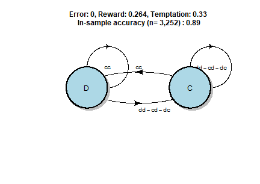
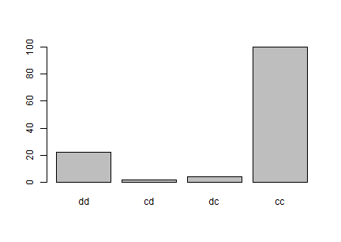
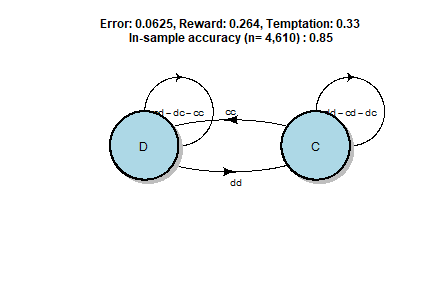
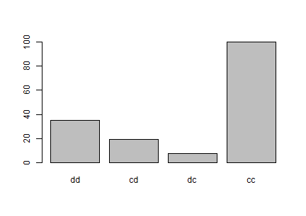
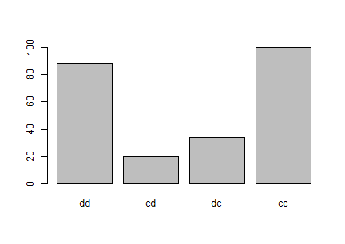
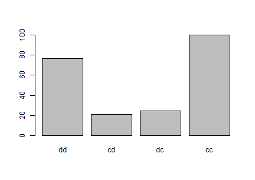
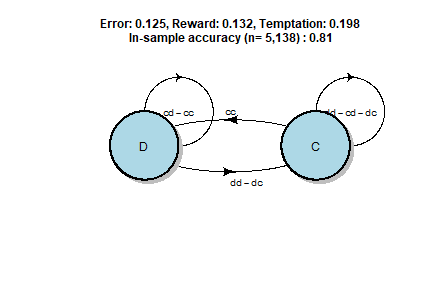
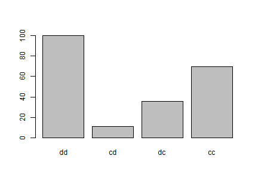
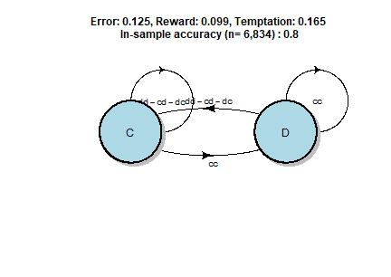
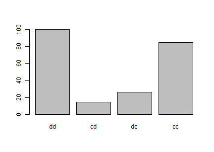

This document applies the datafsm software package (Nay and Gilligan 2015) to the data from Fudenberg, Rand, and Dreber (2012). For the
motivation, underlying design, and tests on simulated data see Nay and Gilligan (2015). For a simple example of
how to use the package see the “Introduction to datafsm”
vignette.
Estimating a model is as simple as ensuring the input data,
e.g. prepped, is in the correct format and calling
evolve_model(prepped). Here, we loop through the six
experimental treatments in the data and estimate a separate model for
each, storing the results in a list we name res. The
parallel argument allows this work to automatically be
spread across all available processors on the computer. This
parallelization, combined with the implementation of the core
computation in C++, speeds up estimation considerably.
The datafsm package includes a dataset from Nay and Vorobeychik (2016), which represents 168,386 rounds of play in 30 different variations on the iterated prisoner’s dilemma game. This example will focus on the six games studied by Fudenberg, Rand, and Dreber (2012).
data(NV_games, package = "datafsm")
group_df <- list(g1 = 15, g2 = 16, g3 = 17, g4 = 14, g5 = 13, g6 = 12) %>%
as_tibble() %>% pivot_longer(cols = everything(), names_to = "label",
values_to = "group") %>%
mutate(group = as.integer(group))
prepped <- NV_games %>% transmute(
group = as.integer(group),
outcome = as.integer(my.decision == "coop") + 1,
period = as.integer(period),
my.decision1 = as.integer(my.decision1 == 1),
other.decision1 = as.integer(other.decision1 == 1)
) %>%
filter(group %in% group_df$group) %>%
full_join(group_df, by = "group") %>%
arrange(label) %>%
select(-group) %>% rename(group = label)
group_indices <- prepped$group %>% unique() %>% sort()
group_seeds <- sample.int(.Machine$integer.max, length(group_indices)) %>%
set_names(as.character(group_indices))
patterns <- NV_games %>% select(group, error, r, t) %>%
mutate(group = as.integer(group)) %>%
full_join(group_df, by = "group") %>%
select(-group) %>% rename(group = label) %>%
filter(group %in% group_indices) %>%
group_by(group) %>% distinct() %>% ungroup() %>%
arrange(group)
res <- lapply(as.list(group_indices), function(x){
message("\nAnalyzing group ", x, "\n")
prepped %>% filter(group == x) %>% select(-group) %>%
evolve_model(parallel = TRUE,
seed = group_seeds[[as.character(x)]],
verbose = FALSE)
})The resulting object has methods for inspecting (print,
show, summary,
estimation_details, best_performance,
varImp, states), visualizing
(plot, barplot, dotchart), and
predicting new data (predict). Below we use the plot and
barplot methods to see the resulting model and the associated relative
importance of the predictor variables. In this case, the predictor
variables are the outcomes of the decisions in the previous period of
the game and the outcome variable (the current state) is the action the
model predicts the agent will take in the current period. The state on
the far left is the starting state.
The variable importance is computed by switching each value of an estimated model’s state matrix to another value in its feasible range, measuring the decrease in goodness of fit to the data, normalizing the values so the largest is 100, then summing across each column to estimate the relative importance of each predictor variable across all states.
names(res) <- group_indices
tl = c("dd", "cd", "dc", "cc")
for(name in names(res)){
pattern <- patterns %>% filter(group == name)
this_res <- res[[name]]
plot(this_res,
action_label = ifelse(action_vec(this_res)==1, "C", "D"),
transition_label = tl,
maintitle = paste0("Error: ", pattern$error,
", Reward: ", pattern$r,
", Temptation: ", pattern$t,
"\n In-sample accuracy (n= ",
formatC(sum(prepped$group==name),
big.mark=',',digits=0),") : ",
round(best_performance(this_res),2)))
barplot(this_res, names.arg=tl)
}
These variable importance plots of the six models capture ways in which
the game design affects player behavior. The first two models are from
the games where the error is zero or low: the cc outcome is
by far the strongest predictor of play. Compare this to the next four
models where error is higher: the dd becomes much more
important. Now compare the third and fourth models from games with
payoffs more amenable to cooperation to the fifth and sixth models from
games with payoffs less amenable to cooperation: the dd
outcome is more important in the latter. We can summarize this main
pattern with a table.
c_minus_d <- res %>% map_dbl(~varImp(.x)[4] - varImp(.x)[1])
df <- c_minus_d %>% as.list() %>% as_tibble() %>%
pivot_longer(cols = everything(), names_to = "group",
values_to = "c_minus_d") %>%
full_join(patterns, by = "group") %>%
select(error, r, t, c_minus_d) %>%
rename(Error = error, Reward = r, Temptation = t,
"CC Imp. Re. to DD" = c_minus_d)
pander(df)| Error | Reward | Temptation | CC Imp. Re. to DD |
|---|---|---|---|
| 0 | 0.264 | 0.33 | 77.55 |
| 0.0625 | 0.264 | 0.33 | 65.16 |
| 0.125 | 0.264 | 0.33 | 12.09 |
| 0.125 | 0.165 | 0.231 | 23.68 |
| 0.125 | 0.132 | 0.198 | -30.7 |
| 0.125 | 0.099 | 0.165 | -15.37 |
These were all two-state models, which is the default. When we call
evolve_model we can either manually set the number of
states, states, or we can set the argument cv to
TRUE, which then estimates the out-of-sample performance
through k-fold cross-validation on the training data for many
values of the number of states to determine the number of states with
best out-of-sample performance for the given dataset (and the given
split into k-folds, which it should be relatively insensitive
to).
k_fold_seeds <- sample.int(.Machine$integer.max, length(group_indices)) %>%
set_names(as.character(group_indices))
res2 <- lapply(as.list(group_indices), function(x){
message("\nPerforming k-fold cross-validation for group ", x, "\n")
# Note: When parallel is set TRUE, evolve_model processes the first few
# groups successfully, but then GA::ga crashes with "mcfork() unable to
# create pipe" when evolving the model for the third or fourth group
# (the exact time it crashes varies from run to run on the same machine).
# There is no similar problem when evolving models with parallel = TRUE
# in the analyze_data chunk.
cv_res <- prepped %>% filter(group == x) %>% select(-group) %>%
evolve_model(parallel = FALSE,
cv = TRUE, max_states = 6, k = 5,
seed = k_fold_seeds[[as.character(x)]],
verbose = FALSE)
message("\nFinished k-fold cross-validation for group ", x, "\n")
cv_res
})
names(res2) <- group_indices
res2states <- map_dbl(res2, states) %>% as.integer() %>%
set_names(names(res2)) %>% as.list() %>% as_tibble() %>%
pivot_longer(cols = everything(), names_to = "group", values_to = "states")
df2 <- patterns %>% full_join(res2states, by = "group") %>%
arrange(group) %>%
select(Error = error, Reward = r, Temptation = t, States = states)
pander(df2)| Error | Reward | Temptation | States |
|---|---|---|---|
| 0 | 0.264 | 0.33 | 2 |
| 0.0625 | 0.264 | 0.33 | 4 |
| 0.125 | 0.264 | 0.33 | 4 |
| 0.125 | 0.165 | 0.231 | 4 |
| 0.125 | 0.132 | 0.198 | 2 |
| 0.125 | 0.099 | 0.165 | 2 |